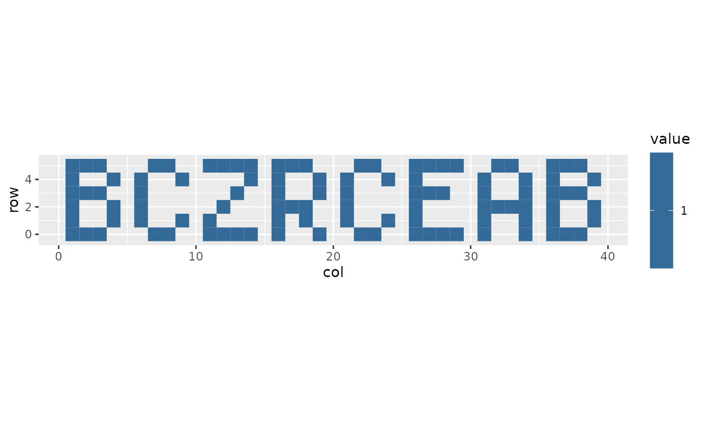
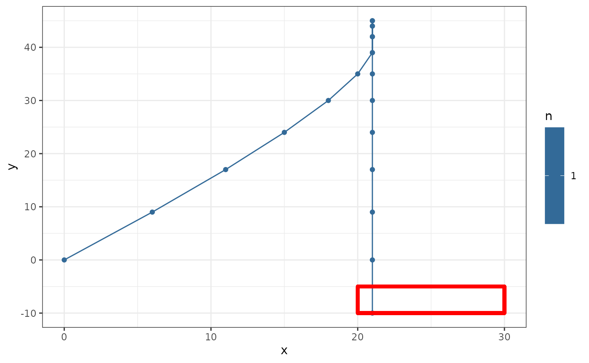
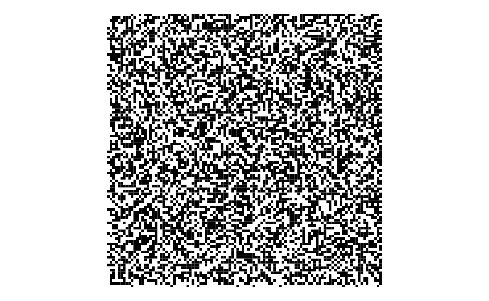

AoC 2021 (R)
Sonia Mitchell
2021-12-28
2021.Rmd
library(docstring)
library(dplyr)
library(ggplot2)
library(here)
library(plotly)
library(purrr)
library(R.utils)
library(tidyr)Day 1: Sonar Sweep
Day 2: Dive!
Part 1
# Read in data
dat <- here("inst", "2021", "day2.txt") |>
read.table()
colnames(dat) <- c("direction", "value")
# Calculate the horizontal position and depth and multiply them together
summarise_dat <- dat |>
dplyr::group_by(direction) |>
dplyr::summarise(total = sum(value))
horizontal_position <- summarise_dat$total[summarise_dat$direction == "forward"]
depth <- summarise_dat$total[summarise_dat$direction == "down"] -
summarise_dat$total[summarise_dat$direction == "up"]
horizontal_position * depth## [1] 1648020Part 2
# Initialise variables
aim <- 0
horizontal_position <- 0
depth <- 0
# Track aim
for (i in seq_len(nrow(dat))) {
if (dat$direction[i] == "down") {
aim <- aim + dat$value[i]
} else if (dat$direction[i] == "up") {
aim <- aim - dat$value[i]
} else {
horizontal_position <- horizontal_position + dat$value[i]
depth <- depth + (aim * dat$value[i])
}
}
horizontal_position * depth## [1] 1759818555Day 3: Binary Diagnostic
Part 1
# Read in data
dat <- here("inst", "2021", "day3.txt") |>
scan(what = "character")
# Number of bits in each binary number
digits <- nchar(dat[1])
# Calculate gamma and epsilon rates
gamma_binary <- rep(NA, digits)
epsilon_binary <- rep(NA, digits)
for (i in seq_len(digits)) {
# Extract the i[th] character of each string
character <- vapply(dat, function(x) substr(x, i, i), character(1))
# Find most common bit
zeroes <- sum(character == "0")
ones <- sum(character == "1")
gamma_binary[i] <- dplyr::if_else(zeroes > ones, 0, 1)
epsilon_binary[i] <- dplyr::if_else(zeroes < ones, 0, 1)
}
gamma_rate <- strtoi(paste(gamma_binary, collapse = ""), base = 2)
epsilon_rate <- strtoi(paste(epsilon_binary, collapse = ""), base = 2)
# Calculate power consumption
gamma_rate * epsilon_rate## [1] 2954600Part 2
# Define functions --------------------------------------------------------
rating <- function(dat, type) {
# For each bit in a binary string
for (i in seq_len(digits)) {
# Extract the i[th] character of each string
character <- vapply(dat, function(x) substr(x, i, i),
character(1))
# Find zeroes and ones
zeroes <- character == "0"
ones <- character == "1"
# Find most common bit
if (sum(zeroes) > sum(ones)) {
bit_criteria <- which(zeroes)
} else if (sum(zeroes) < sum(ones)) {
bit_criteria <- which(ones)
} else {
bit_criteria <- which(ones)
}
# Keep binary strings with most common bit in the ith position
if (type == "oxygen") {
dat <- dat[bit_criteria]
} else if (type == "CO2") {
dat <- dat[-bit_criteria]
}
# If there's only one binary string left, stop
if (length(dat) == 1) break
}
# Return decimal
strtoi(paste(dat, collapse = ""), base = 2)
}
# Run simulation ----------------------------------------------------------
# Calculate oxygen generator and CO2 scrubber ratings
oxygen_generator_rating <- rating(dat, "oxygen")
CO2_scrubber_rating <- rating(dat, "CO2")
# Calculate life support rating
oxygen_generator_rating * CO2_scrubber_rating## [1] 1662846Day 4: Giant Squid
Part 1
# Read in data ------------------------------------------------------------
path <- here("inst", "2021", "day4.txt")
raw_numbers <- scan(path, what = "character", n = 1)
raw_boards <- read.table(path, skip = 1)
# Tidy up data
numbers <- as.numeric(strsplit(raw_numbers, ",")[[1]])
number_of_boards <- nrow(raw_boards) / 5
boards <- lapply(seq_len(number_of_boards), function(x) {
start <- 1 + (5 * (x - 1))
end <- start + 4
raw_boards[start:end, ]
})
# Define functions --------------------------------------------------------
update_board <- function(number, board) {
check_number <- board == number
if (any(check_number, na.rm = TRUE)) {
# Mark the number
find_number <- which(check_number, arr.ind = TRUE)
board[find_number] <- NA
}
board
}
check_for_win <- function(board) {
check_board <- is.na(board)
row_win <- any(rowSums(check_board) == 5)
column_win <- any(colSums(check_board) == 5)
if_else(row_win | column_win, TRUE, FALSE)
}
play_bingo <- function(numbers, boards) {
# For each number in the bingo call
for (this_number in numbers) {
# Check each board
for (i in seq_along(boards)) {
# If the number is on the board, mark it off (as NA)
boards[[i]] <- update_board(this_number, boards[[i]])
# Check for win
has_won <- check_for_win(boards[[i]])
# If this board has won, calculate the winning score
if (has_won)
return(sum(boards[[i]], na.rm = TRUE) * this_number)
}
}
}
# Play bingo --------------------------------------------------------------
play_bingo(numbers, boards)## [1] 31424Part 2
lose_bingo <- function(numbers, boards) {
# Initialise objects
results <- data.frame(number = numeric(), board = numeric(), score = numeric())
remaining_boards <- seq_along(boards)
# For each number in the bingo call
for (this_number in numbers) {
# Check each board
for (i in remaining_boards) {
# If the number is on the board, mark it off (as NA)
boards[[i]] <- update_board(this_number, boards[[i]])
# Check for win
has_won <- check_for_win(boards[[i]])
# If this board has won, calculate the winning score
if (has_won) {
score <- sum(boards[[i]], na.rm = TRUE) * this_number
results <- rbind(results,
data.frame(number = this_number,
board = i,
score = score))
remaining_boards <- remaining_boards[-which(remaining_boards == i)]
}
}
}
results
}
# Play bingo
losers <- lose_bingo(numbers, boards)
tail(losers)## number board score
## 95 43 70 14835
## 96 41 76 11767
## 97 9 15 4599
## 98 9 82 3726
## 99 84 89 36120
## 100 82 16 23042Day 5: Hydrothermal Venture
Part 1
# Read in data
dat <- here("inst", "2021", "day5.txt") |>
read.table()
# Tidy up data
coordinates <- dat |>
dplyr::select(-V2) |>
tidyr::separate(V1, c("x1", "y1")) |>
tidyr::separate(V3, c("x2", "y2")) |>
dplyr::mutate(dplyr::across(dplyr::everything(), as.numeric))
# Initialise object
xlim <- max(c(coordinates$x1, coordinates$x2))
ylim <- max(c(coordinates$y1, coordinates$y2))
grid <- matrix(0, nrow = ylim, ncol = xlim)
# Track horizontal and vertical lines
for (i in seq_len(nrow(coordinates))) {
this_line <- coordinates[i, ]
if (this_line$x1 == this_line$x2) {
# Horizontal line
this_x <- this_line$x1
y_values <- this_line$y1:this_line$y2
# Add one to each point on the line
for (y in y_values) grid[this_x, y] <- grid[this_x, y] + 1
} else if (this_line$y1 == this_line$y2) {
# Vertical line
this_y <- this_line$y1
x_values <- this_line$x1:this_line$x2
# Add one to each point on the line
for (x in x_values) grid[x, this_y] <- grid[x, this_y] + 1
}
}
# Find points where at least two lines overlap
sum(grid >= 2)## [1] 6572Part 2
# Initialise object
grid <- matrix(0, nrow = ylim, ncol = xlim)
# Track horizontal, vertical lines, and diagonal lines
for (i in seq_len(nrow(coordinates))) {
this_line <- coordinates[i, ]
if (this_line$x1 == this_line$x2) {
# Horizontal line
this_x <- this_line$x1
y_values <- this_line$y1:this_line$y2
# Add one to each point on the line
for (y in y_values) grid[this_x, y] <- grid[this_x, y] + 1
} else if (this_line$y1 == this_line$y2) {
# Vertical line
this_y <- this_line$y1
x_values <- this_line$x1:this_line$x2
# Add one to each point on the line
for (x in x_values) grid[x, this_y] <- grid[x, this_y] + 1
} else if(abs(this_line$x1 - this_line$x2) == abs(this_line$y1 - this_line$y2)) {
# Diagonal line
x_values <- this_line$x1:this_line$x2
y_values <- this_line$y1:this_line$y2
# Add one to each point on the line
for (i in seq_along(x_values))
grid[x_values[i], y_values[i]] <- grid[x_values[i], y_values[i]] + 1
}
}
# Find points where at least two lines overlap
sum(grid >= 2)## [1] 21466Day 6: Lanternfish
Part 1
# Read in data
dat <- here("inst", "2021", "day6.txt") |>
scan(what = "character", sep = ",") |>
as.numeric()
# Initialise variables
days <- 80
fish <- dat
# Simulate lanternfish
for (i in seq_len(days)) {
# Find zeroes
zeroes <- which(fish == 0)
# Subtract 1 from all fish
fish <- fish - 1
# Reset zeroes to six
fish[zeroes] <- 6
# Add eights for each zero
fish <- c(fish, rep(8, length(zeroes)))
}
# How many lanternfish would there be after 80 days?
length(fish)## [1] 390923Part 2
It takes too much memory to simulate individual fish in a vector, so generate a frequency table instead.
# Initialise variables
days <- 256
# Generate a frequency table
fish_counts <- data.frame(age = dat) |>
dplyr::count(age) |> # Count fish
complete(age = 0:8, fill = list(n = 0)) # Fill in the missing categories
for (i in seq_len(days)) {
# Number of zeroes
n_zeroes <- fish_counts$n[fish_counts$age == 0]
# Subtract 1 from all fish
fish_counts$n[1:(nrow(fish_counts) - 1)] <- fish_counts$n[2:nrow(fish_counts)]
# Reset zeroes to six
age_6 <- which(fish_counts$age == 6)
fish_counts$n[age_6] <- fish_counts$n[age_6] + n_zeroes
# Add eights for each zero
fish_counts$n[which(fish_counts$age == 8)] <- n_zeroes
}
# How many lanternfish would there be after 256 days?
sum(fish_counts$n) |>
format(scientific = FALSE)## [1] "1749945484935"Day 7: The Treachery of Whales
Part 1
# Read in data
dat <- here("inst", "2021", "day7.txt") |>
scan(what = "character", sep = ",") |>
as.numeric()
# Initialise objects
xlim <- max(dat)
results <- data.frame(x = 1:xlim, total_fuel_cost = NA)
# Determine the horizontal position that the crabs can align to using the least
# fuel possible
for (position in seq_len(xlim)) {
fuel_cost <- 0
for (crab in dat) {
fuel_cost <- fuel_cost + abs(crab - position)
}
results$total_fuel_cost[i] <- sum(fuel_cost)
}
lowest <- which.min(results$total_fuel_cost)
results$x[lowest]## [1] 256
# How much fuel must they spend to align to that position?
results$total_fuel_cost[lowest]## [1] 1464430Part 2
# Initialise objects
results <- data.frame(x = 1:xlim, total_fuel_cost = NA)
# Determine the horizontal position that the crabs can align to using the least
# fuel possible
for (position in seq_len(xlim)) {
fuel_cost <- 0
for (crab in dat) {
distance <- abs(crab - position)
fuel_cost <- fuel_cost + sum(0:distance)
}
results$total_fuel_cost[position] <- sum(fuel_cost)
}
lowest <- which.min(results$total_fuel_cost)
results$x[lowest]## [1] 489
# How much fuel must they spend to align to that position?
results$total_fuel_cost[lowest]## [1] 101268110Day 8: Seven Segment Search
Part 1
# Read in data
dat <- here("inst", "2021", "day8.txt") |>
scan(what = "character", sep = "\n")
# Tidy up data
results <- c()
for (i in seq_along(dat)) {
tmp <- strsplit(dat[i], "\\| ")[[1]][2]
digits <- strsplit(tmp, " ")[[1]]
results[i] <- sum(nchar(digits) %in% c(2, 4, 3, 7))
}
# How many times do digits 1, 4, 7, or 8 (length 2, 4, 3, and 7) appear?
sum(results)## [1] 321Part 2
# Define functions --------------------------------------------------------
find_digit <- function(string_vector, num_characters) {
#' Find string in `string_vector` of length `num_characters`
string_vector[which(nchar(string_vector) == num_characters)]
}
deconstruct <- function(string) {
#' Split string into vector of letters
strsplit(string, "")[[1]]
}
contains_subset <- function(unknown_vector, known_string, contains = TRUE) {
#' contains_subset
#'
#' Find (1) which string in `unknown_vector` contains all segments
#' (characters) in `known_string` or (2) which string is the only one that
#' doesn't
#' @param unknown_vector an unknown vector
#' @param known_string a known string
#' @param contains (optional) default is `TRUE`
results <- c()
for (i in seq_along(unknown_vector)) {
known_segments <- deconstruct(known_string)
unknown_segments <- deconstruct(unknown_vector[i])
if (contains) {
results[i] <- all(known_segments %in% unknown_segments)
} else {
results[i] <- !all(known_segments %in% unknown_segments)
}
}
unknown_vector[which(results)]
}
subset_of <- function(unknown_vector, known_string) {
#' Find the string in `unknown_vector` whose segments (characters) are a
#' subset of `known_string`
results <- c()
for (i in seq_along(unknown_vector)) {
known_segments <- deconstruct(known_string)
unknown_segments <- deconstruct(unknown_vector[i])
results[i] <- all(unknown_segments %in% known_segments)
}
unknown_vector[which(results)]
}
decode <- function(unknown_vector, dictionary) {
#' Decode each string (digit) in `unknown_vector`
code <- c()
for (i in seq_along(unknown_vector)) {
# Check against each dictionary entry
entry <- c()
for (j in seq_len(nrow(dictionary))) {
length_match <- nchar(dictionary$segments[j]) == nchar(unknown_vector[i])
characters_match <- all(deconstruct(dictionary$segments[j]) %in%
deconstruct(unknown_vector[i]))
entry[j] <- length_match && characters_match
}
code[i] <- dictionary$number[which(entry)]
}
as.numeric(paste(code, collapse = ""))
}
# Run simulation ----------------------------------------------------------
# Determine all of the wire/segment connections
results <- c()
for (i in seq_along(dat)) {
segments <- strsplit(dat[i], " \\|")[[1]][1]
segments <- strsplit(segments, " ")[[1]]
# Known
one <- find_digit(segments, 2)
four <- find_digit(segments, 4)
seven <- find_digit(segments, 3)
eight <- find_digit(segments, 7)
# Remaining segments
remaining <- segments[-which(nchar(segments) %in% c(2, 4, 3, 7))]
# six, nine, zero (6)
length_six <- remaining[which(nchar(remaining) == 6)]
six <- contains_subset(length_six, one, FALSE)
nine <- contains_subset(length_six, four, TRUE)
zero <- length_six[!(length_six %in% c(six, nine))]
# two, three, five (5)
length_five <- remaining[which(nchar(remaining) == 5)]
five <- subset_of(length_five, six)
length_five <- length_five[!length_five %in% five]
three <- subset_of(length_five, nine)
two <- length_five[!length_five %in% three]
# Initialise dictionary
dict <- data.frame(number = 0:9,
segments = c(zero, one, two, three, four,
five, six, seven, eight, nine))
# Decode the four-digit output values
digits <- strsplit(dat[i], "\\| ")[[1]][2]
digits <- strsplit(digits, " ")[[1]]
results[i] <- decode(digits, dict)
}
# What do you get if you add up all of the output values?
sum(results)## [1] 1028926Day 9: Smoke Basin
Part 1
# Read in data ------------------------------------------------------------
dat <- here("inst", "2021", "day9.txt") |>
readLines() |>
strsplit("") |>
do.call(what = "rbind") |>
apply(1, as.numeric)
# Define functions --------------------------------------------------------
compare_heights <- function(dat, row, column) {
#' Find `height` of adjacent points and if it's lower than all
#' `adjacent_points`, return risk level
height <- dat[row, column]
# Extract adjacent heights
adjacent_points <- c()
if (i != 1)
adjacent_points <- c(adjacent_points, dat[row - 1, column]) # above
if (j != ncol(dat))
adjacent_points <- c(adjacent_points, dat[row, column + 1]) # right
if (i != nrow(dat))
adjacent_points <- c(adjacent_points, dat[row + 1, column]) # below
if (j != 1)
adjacent_points <- c(adjacent_points, dat[row, column - 1]) # left
# Compare height to adjacent heights
if (all(height < adjacent_points))
return(data.frame(x = row, y = column, risk = height + 1))
}
# Run simulation ----------------------------------------------------------
# Find all of the low points on the heightmap and calculate risk level
lowest_points <- data.frame(x = numeric(), y = numeric(), risk = numeric())
for (i in seq_len(nrow(dat))) {
for (j in seq_len(ncol(dat))) {
lowest_point <- compare_heights(dat, i, j)
lowest_points <- rbind.data.frame(lowest_points, lowest_point)
}
}
# What is the sum of the risk levels of all low points on your heightmap?
sum(lowest_points$risk)## [1] 603Part 2
# Define functions --------------------------------------------------------
check_height <- function(dat, row, column) {
#' Check height is less than 9
if (dat[row, column] < 9)
return(data.frame(row = row, column = column, height = dat[row, column]))
}
check_adjacent <- function(dat, row, column) {
#' Return neighbouring points that have a height less than 9
# Find height of adjacent points
adjacent_points <- data.frame(row = numeric(), column = numeric(),
height = numeric())
if (row != 1) # Above
adjacent_points <- rbind(adjacent_points, check_height(dat, row - 1, column))
if (column != ncol(dat)) # Right
adjacent_points <- rbind(adjacent_points, check_height(dat, row, column + 1))
if (row != nrow(dat)) # Below
adjacent_points <- rbind(adjacent_points, check_height(dat, row + 1, column))
if (column != 1) # Left
adjacent_points <- rbind(adjacent_points, check_height(dat, row, column - 1))
# Return neibouring points that should be checked
adjacent_points |>
dplyr::filter(height != 9)
}
survey <- function(dat, row, column) {
#' For a particular `lowest_point`, survey the basin and return it's size
# Height of lowest point being surveyed
height <- dat[row, column]
# Initialise basin dataframe
basin <- data.frame(row = row, column = column, risk = height + 1)
# Find adjacent points with depth less than 9
neighbours <- check_adjacent(dat, row, column)
# Add them to the basin
tmp <- neighbours |>
dplyr::mutate(risk = height + 1) |>
dplyr::select(-height)
basin <- rbind(basin, tmp)
# Check neighbouring points
continue <- nrow(neighbours) > 0
while(continue) {
more_neighbours <- check_adjacent(dat,
neighbours$row[1],
neighbours$column[1])
# Remove this point from `neighbours`
neighbours <- neighbours[-1, ]
# Remove new neighbours that are already in the basin
more_neighbours <- setdiff(dplyr::select(more_neighbours, -height),
dplyr::select(basin, -risk)) |>
dplyr::left_join(more_neighbours, by = c("row", "column"))
# If any new neighbours are remaining
if (nrow(more_neighbours) > 0) {
# Add them to the basin
tmp <- more_neighbours |>
dplyr::mutate(risk = height + 1) |>
dplyr::select(-height)
basin <- rbind(basin, tmp)
# And add them to `neighbours` (for checking)
neighbours <- rbind(neighbours, more_neighbours)
}
continue <- nrow(neighbours) > 0
}
# Return size of basin
nrow(basin)
}
# Run simulation ----------------------------------------------------------
# Find all of the low points on the heightmap and calculate basin size
results <- c()
for (i in seq_len(nrow(lowest_points))) {
# cat("\r", i, "/", nrow(lowest_points))
size <- survey(dat, lowest_points$x[i], lowest_points$y[i])
results <- c(results, size)
}
# Multiply together the sizes of the three largest basins
prod(tail(sort(results), 3))## [1] 786780Day 10: Syntax Scoring
Part 1
# Read in data ------------------------------------------------------------
dat <- here("inst", "2021", "day10.txt") |>
readLines()
corrupted_score <- function(character) {
score_table <- data.frame(char = c(")", "]", "}", ">"),
val = c(3, 57, 1197, 25137))
score_table$val[which(score_table$char == character)]
}
# Run simulation ----------------------------------------------------------
total <- 0
remove_lines <- c()
for (i in seq_along(dat)){
expecting <- c()
points <- NA
check_this <- strsplit(dat[i], "")[[1]]
for (j in seq_along(check_this)) {
if (check_this[j] == "("){
expecting <- c(expecting, ")")
} else if (check_this[j] == "[") {
expecting <- c(expecting, "]")
} else if (check_this[j] == "{") {
expecting <- c(expecting, "}")
} else if (check_this[j] == "<") {
expecting <- c(expecting, ">")
} else {
# If `check_this` matches the last expected value, remove it
if (check_this[j] == tail(expecting, 1)) {
expecting <- expecting[-length(expecting)]
} else if (is.na(points)) {
# Otherwise add the score to `total`
points <- corrupted_score(check_this[j])
total <- total + points
remove_lines <- c(remove_lines, i)
break
}
}
}
}
# Find the first illegal character in each corrupted line of the navigation
# subsystem. What is the total syntax error score for those errors?
total## [1] 296535Part 2
# Remove corrupted lines
incomplete_lines <- dat[-remove_lines]
incomplete_score <- function(character) {
score_table <- data.frame(char = c(")", "]", "}", ">"),
val = c(1, 2, 3, 4))
score_table$val[which(score_table$char == character)]
}
results <- c()
for (i in seq_along(incomplete_lines)){
expecting <- c()
check_this <- strsplit(incomplete_lines[i], "")[[1]]
points <- 0
for (j in seq_along(check_this)) {
if (check_this[j] == "("){
expecting <- c(expecting, ")")
} else if (check_this[j] == "[") {
expecting <- c(expecting, "]")
} else if (check_this[j] == "{") {
expecting <- c(expecting, "}")
} else if (check_this[j] == "<") {
expecting <- c(expecting, ">")
} else {
# If `check_this` matches the last expected value, remove it
if (check_this[j] == tail(expecting, 1)) {
expecting <- expecting[-length(expecting)]
}
}
}
expecting <- rev(expecting)
# Calculate score
for (k in seq_along(expecting)) {
points <- (points * 5) + incomplete_score(expecting[k])
}
results <- c(results, points)
}
# Find the completion string for each incomplete line, score the completion
# strings, and sort the scores. What is the middle score?
index <- ceiling(length(results) / 2)
value <- sort(results)[index]
format(value, scientific = FALSE)## [1] "4245130838"Day 11: Dumbo Octopus
Part 1
# Read in data ------------------------------------------------------------
dat <- here("inst", "2021", "day11.txt") |>
scan(what = "character") |>
strsplit("") |>
do.call(what = rbind) |>
apply(1, as.numeric)
# Define functions --------------------------------------------------------
find_neighbours <- function(x, y, flashing_now, flashed_previously, octopus) {
# Index neighbours
tmp <- rbind(data.frame(row = x - 1, col = (y - 1):(y + 1)), # above
data.frame(row = x, col = c(y - 1, y + 1)), # sides
data.frame(row = x + 1, col = (y - 1):(y + 1))) # below
# Remove invalid coordinates
xlim <- ncol(octopus) + 1
ylim <- nrow(octopus) + 1
tmp <- dplyr::filter(tmp, row != 0, col != 0, row != xlim, col != ylim)
# Add to `neighbours`, remove duplicates, and remove those that are flashing
# now or have flashed previously
tmp |>
unique() |>
dplyr::anti_join(data.frame(flashing_now), by = c("row", "col")) |>
dplyr::anti_join(data.frame(flashed_previously), by = c("row", "col")) |>
as.matrix()
}
timestep <- function(octopus) {
# Increases the energy level of each octopus by 1
octopus <- octopus + 1
done <- matrix(nrow = 0, ncol = 2)
# Any octopus with an energy level greater than 9 flashes and has its energy
# level reset to 0, the energy level of all adjacent octopuses (including
# octopuses that are diagonally adjacent) increases by 1. If this causes an
# octopus to have an energy level greater than 9, it also flashes
while (any(octopus > 9)) {
# Check if energy level is greater than 9
flash <- which(octopus > 9, arr.ind = T)
# Flash
done <- rbind(done, flash)
# Reset energy
octopus[flash] <- 0
# For each flashing octopus
for (j in seq_len(nrow(flash))) {
x <- unname(flash[j, "row"])
y <- unname(flash[j, "col"])
# Find adjacent octopi
neighbours <- find_neighbours(x, y, flash, done, octopus)
# Increase energy level by 1
octopus[neighbours] <- octopus[neighbours] + 1
}
}
# Latest flashes
list(octopus = octopus, latest_flashes = nrow(done))
}
# Run simulation ----------------------------------------------------------
octopus <- dat
count <- 0
# Given the starting energy levels of the dumbo octopuses in your cavern,
# simulate 100 steps.
for (i in 1:100) {
# cat("\r", i, "of 100")
data <- timestep(octopus)
octopus <- data$octopus
count <- count + data$latest_flashes
}
# How many total flashes are there after 100 steps?
count## [1] 1743Part 2
octopus <- dat
count <- 1
# What is the first step during which all octopuses flash?
while (sum(octopus) != 0) {
# cat("\r", count)
data <- timestep(octopus)
octopus <- data$octopus
count <- count + 1
}
count## [1] 365Day 12: Passage Pathing
Part 1
# Read in data
dat <- here("inst", "2021", "day12.txt") |>
read.table(sep = "-")
# Tidy up data
dat <- rbind(dat, rename(dat, V1 = V2, V2 = V1)) |>
dplyr::rename(from = V1,
to = V2) |>
dplyr::filter(from != "end",
to != "start")
# Initialise routes
completed_routes <- list()
unfinished_routes <- filter(dat, from == "start")
unfinished_routes <- lapply(seq_len(nrow(unfinished_routes)),
function(x) unname(unlist(unfinished_routes[x,])))
# Plot routes through cave system
while (length(unfinished_routes) > 0) {
this_route <- unfinished_routes[[1]]
this_cave <- tail(this_route, 1)
# Record next step(s) of the route
next_steps <- dplyr::filter(dat, from == this_cave, to != "start")$to
# If the exit has been found, move the route to `completed_routes`
if ("end" %in% next_steps) {
completed_routes <- c(completed_routes, list(c(this_route, "end")))
next_steps <- setdiff(next_steps, "end")
}
# If the cave is small and has already been visited, ignore it
small <- next_steps[vapply(next_steps, function(x)
grepl("^[[:lower:]]+$", x), logical(1))]
big <- setdiff(next_steps, small)
next_steps <- c(setdiff(small, this_route), big)
# Record next step(s) of the route
add_these <- lapply(next_steps, function(x) c(this_route, x))
# Record steps and tidy up
unfinished_routes <- c(unfinished_routes, add_these)
unfinished_routes <- unfinished_routes[-1]
}
# How many paths through this cave system are there that visit small caves at
# most once?
length(completed_routes)## [1] 3887Part 2
We have to use a different method for Part 2, since it takes too long to calculate the number of routes.
# Initialise routes
unfinished <- dplyr::filter(dat, from == "start")
complete <- data.frame()
last_step <- "to"
# Plot routes through cave system
while (nrow(unfinished) != 0) {
# Record next step(s) of the route
unfinished <- dplyr::left_join(unfinished, dat,
by = setNames("from", last_step))
# Extract column name of the last step
last_step <- tail(names(unfinished), 1)
# For each unfinished route, count the number of small caves that were
# visited more than once
test <- apply(unfinished, 1, function(x) {
duplicates <- x[duplicated(unlist(x))]
islower <- grepl("^[[:lower:]]+$", duplicates)
sum(islower)})
# Remove routes where more than one small cave was visited more than once
index <- which(test > 1)
if (length(index) > 0)
unfinished <- unfinished[-index, ]
# Add completed routes to `complete`
complete <- dplyr::bind_rows(complete,
dplyr::filter(unfinished,
get(last_step) == "end"))
# Remove completed routes from `unfinished`
unfinished <- dplyr::filter(unfinished, get(last_step) != "end")
}
# If we visit a single small cave twice, how many paths through this cave
# system are there?
nrow(complete)## [1] 104834Day 13: Transparent Origami
Part 1
# Read in data ------------------------------------------------------------
dat <- here("inst", "2021", "day13.txt") |>
read.table(sep = "-")
# Tidy up data
dots <- dat |>
dplyr::filter(!grepl("^fold", V1)) |>
tidyr::separate(V1, c("y", "x"), convert = TRUE) |>
dplyr::mutate(x = x + 1,
y = y + 1) |>
dplyr::select(x, y)
xlim <- max(dots$x)
ylim <- max(dots$y)
instructions <- dplyr::filter(dat, grepl("^fold", V1)) |>
dplyr::mutate(V1 = gsub("^.*([a-z]=[0-9]*)$", "\\1", V1)) |>
tidyr::separate(V1, c("axis", "value")) |>
dplyr::mutate(value = as.numeric(value) + 1)
# Generate grid of dots
paper <- matrix(FALSE, nrow = xlim, ncol = ylim)
for (i in seq_len(nrow(dots))) paper[dots$x[i], dots$y[i]] <- TRUE
# Define functions --------------------------------------------------------
fold_left <- function(grid, value) {
#' Make a vertical fold
left <- grid[, 1:(value - 1)]
right <- grid[, (value + 1):ncol(grid)]
pad <- matrix(0, nrow = nrow(grid), ncol = abs(ncol(left) - ncol(right)))
if (ncol(right) < ncol(left)) {
right <- cbind(right, pad)
} else if (ncol(right) > ncol(left)) {
left <- cbind(pad, left)
}
left | right[, ncol(right):1]
}
# Run simulation ----------------------------------------------------------
# Make first fold
results <- fold_left(paper, instructions[1,]$value)
# How many dots are visible after completing just the first fold instruction on
# your transparent paper?
sum(results > 0)## [1] 847Part 2
# Define functions --------------------------------------------------------
fold_up <- function(grid, value) {
#' Make a horizontal fold
upper <- grid[1:(value - 1), ]
lower <- grid[(value + 1):nrow(grid), ]
pad <- matrix(FALSE, nrow = abs(nrow(upper) - nrow(lower)), ncol = ncol(upper))
if (nrow(upper) < nrow(lower)) {
upper <- rbind(pad, upper)
} else if (nrow(upper) > nrow(lower)) {
lower <- rbind(lower, pad)
}
upper | lower[nrow(lower):1, ]
}
# Run simulation ----------------------------------------------------------
fold_this <- paper
# Finish folding the transparent paper according to the instructions. The
# manual says the code is always eight capital letters.
for (i in seq_len(nrow(instructions))) {
if (instructions$axis[i] == "x") {
fold_this <- fold_left(fold_this, instructions$value[i])
} else if(instructions$axis[i] == "y") {
fold_this <- fold_up(fold_this, instructions$value[i])
}
}
# What code do you use to activate the infrared thermal imaging camera system?
coords <- which(fold_this, arr.ind = TRUE) |>
as.data.frame() |>
dplyr::mutate(value = 1,
row = max(row) - row)
ggplot2::ggplot(coords, ggplot2::aes(x = col, y = row, fill = value)) +
ggplot2::geom_tile(fill = "goldenrod2") +
ggplot2::coord_fixed() +
ggplot2::theme_void() +
ggplot2::theme(legend.position = "none")
Day 14: Extended Polymerization
Part 1
# Read in data ------------------------------------------------------------
# Read in polymer template
path <- here("inst", "2021", "day14.txt")
template <- path |>
scan(what = "character", n = 1)
# Read in pair insertion rules
rules <- path |>
scan(what = "character", sep = "\n", skip = 2) |>
data.frame() |>
setNames("x") |>
tidyr::separate(x, c("pair", "insert"), " -> ")
# Run simulation ----------------------------------------------------------
current_string <- strsplit(template, "")[[1]]
# Apply 10 steps of pair insertion to the polymer template and find the most
# and least common elements in the result
for (i in seq_len(10)) {
next_string <- ""
# cat("\r", i)
for (j in seq_len(length(current_string) - 1)) {
index <- which(rules$pair == paste(current_string[j:(j + 1)],
collapse = ""))
if (length(index) != 0) {
next_string <- paste0(next_string, current_string[j], rules$insert[index])
} else {
next_string <- paste0(next_string, current_string[j])
}
}
next_string <- paste0(next_string, tail(current_string, 1))
current_string <- strsplit(next_string, "")[[1]]
}
# What do you get if you take the quantity of the most common element and
# subtract the quantity of the least common element?
freq <- table(current_string)
max(freq) - min(freq)## [1] 2027Alternative solution
current_string <- strsplit(template, "")[[1]]
for (i in 1:10) {
# cat("\r", i)
pairs <- vapply(seq_len(length(current_string) - 1), function(x)
paste(current_string[x:(x + 1)], collapse = ""), character(1)) |>
data.frame() |>
setNames("pair")
next_string <- dplyr::left_join(pairs, rules,
by = "pair") |>
tidyr::separate(pair, c("first", "last"), "(?<=[A-Z])") |>
tidyr::unite(string, c(first, insert), sep = "", na.rm = TRUE) |>
dplyr::select(string) |>
unlist() |>
paste(collapse = "") |>
paste0(tail(current_string, 1, collapse = ""))
current_string <- strsplit(next_string, "")[[1]]
}
freq <- table(current_string)
max(freq) - min(freq)## [1] 2027Part 1 is too slow to use the same method with part 2.
Day 15: Chiton
Day 16: Packet Decoder
Day 17: Trick Shot
Part 1
# Read in data ------------------------------------------------------------
dat <- here("inst", "2021", "day17.txt") |>
readLines()
# Extract target coordinates
xrange <- gsub("^.*x=(.*)\\.\\.(.*),.*$", "\\1 \\2", dat) |>
strsplit(" ") |>
unlist() |>
as.numeric()
yrange <- gsub("^.*y=(.*)\\.\\.(.*)$", "\\1 \\2", dat) |>
strsplit(" ") |>
unlist() |>
as.numeric()
# Define functions --------------------------------------------------------
# Move one step
move <- function(status) {
#' Move one step
#'
#' @param status last step
x <- status$x + status$vx
y <- status$y + status$vy
vx <- status$vx
vy <- status$vy
vx <- dplyr::if_else(vx > 0, vx - 1,
dplyr::if_else(vx < 0, vx + 1, vx))
vy <- vy - 1
data.frame(x = x, y = y, vx = vx, vy = vy)
}
launch <- function(df, trial, xrange, yrange) {
#' Launch probe until target is hit or overshot
continue <- TRUE
step <- 1
while (continue) {
update <- move(tail(df, 1))
df <- rbind(df, mutate(trial = trial, step = step, update))
foundtarget <- dplyr::if_else(
update$x >= xrange[1] & update$x <= xrange[2] &
update$y >= yrange[1] & update$y <= yrange[2],
TRUE, FALSE)
overshot <- dplyr::if_else(update$x > xrange[2] | update$y < yrange[2],
TRUE, FALSE)
continue <- dplyr::if_else(foundtarget | overshot, FALSE, TRUE)
step <- step + 1
}
mutate(df, hit = foundtarget)
}
# Run simulation ----------------------------------------------------------
start <- c(0, 0)
velocity <- c(0, 1)
n <- 1
results <- data.frame()
for (i in 1:120) {
trial <- data.frame(trial = n,
step = 0,
x = start[1],
y = start[2],
vx = velocity[1],
vy = velocity[2])
results <- rbind(results, launch(trial, n, xrange, yrange))
n <- n + 1
if (tail(results, 1)$x < xrange[1]) {
velocity[1] <- velocity[1] + 1
} else if (tail(results, 1)$x > xrange[2]) {
velocity[1] <- velocity[1] - 1
} else {
velocity[2] <- velocity[2] + 1
}
}
# Find the initial velocity that causes the probe to reach the highest y
# position and still eventually be within the target area after any step
this_trial <- results |>
dplyr::filter(hit == T) |>
dplyr::filter(y == max(y)) |>
dplyr::pull(trial) |>
unique()
# Initial y velocity
results |>
dplyr::filter(trial == this_trial,
step == 0) |>
dplyr::pull(vy)## [1] 79
# What is the highest y position it reaches on this trajectory?
results |>
dplyr::filter(trial == this_trial) |>
dplyr::filter(y == max(y)) |>
dplyr::pull(y) |>
unique()## [1] 3160Test data
# Plot test run -----------------------------------------------------------
dat = "target area: x=20..30, y=-10..-5"
xrange <- gsub("^.*x=(.*)\\.\\.(.*),.*$", "\\1 \\2", dat) |>
strsplit(" ") |>
unlist() |>
as.numeric()
yrange <- gsub("^.*y=(.*)\\.\\.(.*)$", "\\1 \\2", dat) |>
strsplit(" ") |>
unlist() |>
as.numeric()
start <- c(0, 0)
velocity <- c(6, 9)
n <- 1
results <- data.frame()
trial <- data.frame(trial = n,
step = 0,
x = start[1],
y = start[2],
vx = velocity[1],
vy = velocity[2])
results <- launch(trial, n, xrange, yrange) |>
rbind(what = results)
results |>
dplyr::filter(hit == TRUE) |>
ggplot2::ggplot(ggplot2::aes(x = x, y = y, group = n, colour = n)) +
ggplot2::theme_bw() + ggplot2::geom_point() + ggplot2::geom_line() +
ggplot2::scale_x_continuous(limits = range(c(xrange, results$x))) +
ggplot2::scale_y_continuous(limits = range(c(yrange, results$y))) +
ggplot2::geom_rect(xmin = xrange[1], xmax = xrange[2],
ymin = yrange[1], ymax = yrange[2],
fill = "transparent", color = "red", size = 1.5)
Part 2
# Read in data ------------------------------------------------------------
dat <- here("inst", "2021", "day17.txt") |>
readLines()
# Extract target coordinates
xrange <- gsub("^.*x=(.*)\\.\\.(.*),.*$", "\\1 \\2", dat) |>
strsplit(" ") |> unlist() |> as.numeric()
yrange <- gsub("^.*y=(.*)\\.\\.(.*)$", "\\1 \\2", dat) |>
strsplit(" ") |> unlist() |> as.numeric()
# Define functions --------------------------------------------------------
possible_x <- function(range, min_v, max_v) {
#' Test which velocities might hit the target
#'
#' @param range range of target
#' @param min_v minimum velocity to try
#' @param max_v maximum velocity to try
output <- c()
for (v in min_v:max_v) {
# Calculate position of points
points <- cumsum(seq(v, 1, -1))
# Check if any points hit the target zone
if (any(between(points, min(range), max(range))))
output <- c(output, v)
}
output
}
possible_y <- function(range, min_v, max_v) {
#' Test which velocities might hit the target
#'
#' @param range of target
#' @param min_v minimum velocity to try
#' @param max_v maximum velocity to try
output <- c()
for (v in min_v:max_v) {
z <- max(abs(range))
# Calculate position of points below the x axis
if (v > 0) {
points <- -cumsum((v + 1):(v * z))
} else if (v < 0) {
points <- cumsum(seq(v, (v * z), -1))
} else {
points <- 0
subtract <- 1
while (min(points) > range[1]) {
points <- c(points, (tail(points, 1) - subtract))
subtract <- subtract + 1
}
}
# Check if any points hit the target zone
if (any(between(points, min(range), max(range))))
output <- c(output, v)
}
output
}
# Initialise variables ----------------------------------------------------
# Minimum x_velocity (when x_velocity = i, distance in x axis = cumsum(1:i))
xv_min <- optimize(function(x) abs(max(cumsum(1:x)) - xrange[1]), 1:10) |>
purrr::pluck("minimum") |> round()
# Which velocities might hit the target?
poss_xv <- possible_x(range = xrange,
min_v = xv_min,
max_v = 500)
poss_yv <- possible_y(range = yrange,
min_v = -2500,
max_v = 500)
velocities <- expand.grid(poss_xv, poss_yv) |>
dplyr::rename(xv = Var1, yv = Var2)
start <- c(0, 0)
# Check all combinations --------------------------------------------------
results <- lapply(seq_len(nrow(velocities)), function(i) {
# Extract velocities
xv <- velocities$xv[i]
yv <- velocities$yv[i]
# Calculate trajectory
z <- max(abs(yrange))
if (yv > 0) {
y <- c(0, cumsum(seq(yv, 1, -1)))
y <- c(y, rev(y), -cumsum((yv + 1):(yv * z)))
} else if (yv < 0) {
y <- c(0, cumsum(yv:(yv * z)))
} else {
y <- c(0, 0)
subtract <- 1
while (min(y) > yrange[1]) {
y <- c(y, (tail(y, 1) - subtract))
subtract <- subtract + 1
}
}
x <- c(0, cumsum(seq(xv, 1, -1)))
if (length(x) > length(y)) {
y <- c(y, rep(tail(y, 1), length(x) - length(y)))
} else {
x <- c(x, rep(tail(x, 1), length(y) - length(x)))
}
# Paste coordinates together
trajectory <- cbind.data.frame(x = x, y = y)
# Check whether points have hit the target
hit <- trajectory |>
dplyr::filter(between(x, xrange[1], xrange[2]),
between(y, yrange[1], yrange[2]))
if (nrow(hit) != 0) {
out <- data.frame(xv = xv,
yv = yv,
y_max = max(trajectory$y))
} else {
out <- NULL
}
out
}) |>
do.call(what = rbind)
# Find the initial velocity that causes the probe to reach the highest y
# position and still eventually be within the target area after any step
results |>
dplyr::filter(y_max == max(y_max))## xv yv y_max
## 1 24 79 3160
# What is the highest y position it reaches on this trajectory?
results |>
dplyr::filter(y_max == max(y_max)) |>
dplyr::pull(y_max) |>
unique()## [1] 3160
# How many distinct initial velocity values cause the probe to be within the
# target area after any step?
results |>
dplyr::select(xv, yv) |>
unique() |>
nrow()## [1] 1928Day 18: Snailfish
Part 1
# Read in data ------------------------------------------------------------
dat <- here("inst", "2021", "day18.txt") |>
readLines()
# Define functions --------------------------------------------------------
explode <- function(dat) {
#' Function to check for and carry out explosion
count <- 0
i <- 1
left <- NA
right <- NA
# Check for explosion
while(i != length(dat)) {
if (dat[i] == "[") {
count <- count + 1
} else if (grepl("[0-9]", dat[i])) {
if (dat[i + 1] == "," & grepl("[0-9]", dat[i + 2]) & count > 4) {
right <- head(grep("[0-9]", dat[(i + 3):length(dat)]), 1) + i + 2
if (length(right) == 0) right <- NA
left <- tail(grep("[0-9]", dat[1:(i - 1)]), 1)
if (length(left) == 0) left <- NA
break
}
} else if (dat[i] == "]") {
count <- count - 1
}
i <- i + 1
}
# Explode
if (is.na(left) & is.na(right)) {
return(NA)
} else if (is.na(left)) {
tmp <- dat
tmp[right] <- as.numeric(dat[right]) + as.numeric(dat[i + 2])
tmp <- tmp[-c(i:(i + 3))]
tmp[i - 1] <- 0
return(tmp)
} else if (is.na(right)) {
tmp <- dat[-c(i:(i + 3))]
tmp[i - 3] <- as.numeric(dat[left]) + as.numeric(dat[i])
tmp[i - 1] <- 0
return(tmp)
} else {
tmp <- dat
tmp[left] <- as.numeric(dat[left]) + as.numeric(dat[i])
tmp[right] <- as.numeric(dat[right]) + as.numeric(dat[i + 2])
tmp <- tmp[-c(i:(i + 3))]
tmp[i - 1] <- 0
return(tmp)
}
}
split <- function(dat) {
#' Function to check for and carry out split
# Check for split
index <- NA
for (i in seq_along(dat)) {
if (grepl("[0-9]", dat[i]) && as.numeric(dat[i]) >= 10) {
index <- i
break
}
}
# Split
if (is.na(index)) {
return(NA)
} else {
left <- dat[1:(index - 1)]
right <- dat[(index + 1):length(dat)]
tmp <- as.numeric(dat[index])
tmp <- c("[", floor(tmp / 2), ",", ceiling(tmp / 2), "]")
return(c(left, tmp, right))
}
}
reduce_snailfish <- function(dat) {
#' Function to reduce a snailfish number
try_this <- dat
continue <- TRUE
it_split <- FALSE
while (continue) {
result <- explode(try_this)
it_exploded <- !all(is.na(result))
if (it_exploded) {
try_this <- result
it_split <- FALSE
} else {
result <- split(try_this)
it_split <- !all(is.na(result))
if (!it_exploded & !it_split) {
return(try_this)
} else {
try_this <- result
}
}
}
}
add_snailfish <- function(first, second) {
#' Add snailfish numbers
#'
if (length(first) > 1)
first <- paste(first, collapse = "")
paste0("[", first, ",", second, "]") |>
strsplit("") |>
unlist() |>
reduce_snailfish()
}
check_magnitude <- function(answer) {
#' Function to check magnitude of answer
while(length(answer) != 1) {
count <- 1
depth <- 1
for (i in tail(seq_along(answer), -1)) {
if (answer[i] == "[") {
count <- count + 1
} else if (answer[i] == "]") {
count <- count - 1
}
depth[i] <- count
}
deepest <- which(depth == max(depth))
index <- R.utils::seqToIntervals(deepest) |>
data.frame() |>
dplyr::pull(from) |>
rev() + 1
for (j in index) {
first <- 3 * as.numeric(answer[j])
second <- 2 * as.numeric(answer[j + 2])
answer <- answer[-c(j:(j + 3))]
answer[j - 1] <- first + second
}
}
return(as.numeric(answer))
}
# Run simulation ----------------------------------------------------------
first <- dat[1]
for (i in tail(seq_along(dat), -1)) {
result <- add_snailfish(first, dat[i])
first <- result
}
# Add up all of the snailfish numbers from the homework assignment in the
# order they appear. What is the magnitude of the final sum?
check_magnitude(result)## [1] 4116Part 2
# What is the largest magnitude of any sum of two different snailfish numbers
# from the homework assignment?
n <- length(dat)
combinations <- expand.grid(1:n, 1:n) |>
dplyr::filter(Var1 != Var2)
results <- c()
for (i in seq_len(nrow(combinations))) {
# cat("\r", i, "of", nrow(combinations))
first <- combinations$Var1[i]
second <- combinations$Var2[i]
results[i] <- add_snailfish(dat[first], dat[second]) |>
check_magnitude()
}
max(results)## [1] 4638Day 19: Beacon Scanner
Part 1
# Read in data ------------------------------------------------------------
dat <- here("inst", "2021", "day19.txt") |>
readLines() |>
data.frame() |>
setNames("data")
start <- grep("scanner", dat$data)
end <- c(tail(start - 1, -1), nrow(dat))
scans <- lapply(seq_along(start), function(x) {
tmp <- dat[start[x]:end[x], ]
tmp <- tmp[-1]
index <- which(tmp == "")
if (length(index) != 0)
tmp <- tmp[-index]
out <- data.frame(data = tmp) |>
tidyr::separate(col = data, into = c("d1", "d2", "d3"), sep = ",") |>
dplyr::mutate_if(is.character, as.numeric) |>
as.matrix()
colnames(out) <- NULL
out
})
# Define functions --------------------------------------------------------
spin <- function(x) {
#' Spin around an axis
vec <- if(is.vector(x)) x else tail(x, 1)
for (i in 1:3) {
vec <- c(vec[3], vec[2], -vec[1])
x <- rbind(x, vec)
}
unname(x)
}
flip <- function(x) {
#' Turn upside down
vec <- if(is.vector(x)) x else tail(x, 1)
vec <- c(-vec[1], -vec[2], vec[3])
rbind(x, vec) |>
unname()
}
reorient <- function(x) {
#' Take the next axis as up
vec <- if(is.vector(x)) x else tail(x, 1)
vec <- c(vec[3], vec[1], vec[2])
rbind(x, vec) |>
unname()
}
spin_and_flip <- function(x) {
x |> spin() |> flip() |> spin()
}
get_combinations <- function(x) {
x |> spin_and_flip() |>
reorient() |>
spin_and_flip() |>
reorient() |>
spin_and_flip()
}
transform <- function(coordinate, transformation) {
index <- abs(transformation)
sign <- vapply(transformation, function(x) if (x > 0) 1 else -1, numeric(1))
reindex <- c(coordinate[index[1]], coordinate[index[2]], coordinate[index[3]])
reindex * sign
}
transform_all <- function(scanner_output, transformation) {
lapply(seq_len(nrow(scanner_output)), function(x)
transform(scanner_output[x, ], transformation)) |>
do.call(what = rbind)
}
# Assemble the full map of beacons ----------------------------------------
transformations <- get_combinations(1:3)
scanners <- data.frame(scanner = 0, x = 0, y = 0, z = 0)
while(nrow(scanners) != length(scans)) {
results <- list()
# Compare each scanner output to that of scanner 0
for (i in tail(seq_along(scans), -1)) {
# cat("\r", i, "of", length(scans), "-",
# length(scans) - nrow(scanners), "left to find...")
if ((i - 1) %in% scanners$scanner) next
scanner_zero <- scans[[1]]
scanner_i <- scans[[i]]
for (j in seq_len(nrow(transformations))) {
this_transformation <- transformations[j, ]
# Transform `scanner_i` by `this_transformation`
transformed_scanner <- transform_all(scanner_i, this_transformation)
# Try subtracting each beacon coordinate in `scanner_zero` from each
# beacon coordinate in `transformed_scanner` (transformation of
# `scanner_i`)
subtract <- lapply(seq_len(nrow(scanner_zero)), function(x)
apply(transformed_scanner, 1, function(y) y - scanner_zero[x, ]) |>
t()) |>
do.call(what = rbind.data.frame) |>
tidyr::unite(unscramble) |>
dplyr::group_by(unscramble) |>
dplyr::summarize(n = dplyr::n())
# If 12 or more matches are found, record the scanner position
if (max(subtract$n) >= 12) {
this_coordinate <- subtract |>
dplyr::filter(n == max(n)) |>
tidyr::separate(unscramble, c("x", "y", "z"), sep = "_") |>
dplyr::select(-n) |>
data.frame() |>
dplyr::mutate_if(is.character, as.numeric)
colnames(this_coordinate) <- c("x", "y", "z")
scanners <- rbind(scanners,
cbind(scanner = i - 1, this_coordinate))
results[[i]] <- list(scanner1 = 0,
scanner2 = i - 1,
beacon = this_coordinate,
transformation = this_transformation)
break
}
}
}
# Which beacons can see each other?
relatives <- lapply(seq_along(results), function(x)
if (is.null(results[[x]])) {
NA
} else {
data.frame(from = results[[x]]$scanner1,
to = results[[x]]$scanner2)
}
) |>
do.call(what = rbind)
# Append new beacon coordinates to scanner outputs
for (k in seq_len(nrow(relatives))) {
if (all(is.na(relatives[k,]))) next
tmp <- results[[k]]
from <- relatives$from[k] + 1
to <- relatives$to[k] + 1
# Transform `to` scanner coordinates relative to `from` scanner coordinates
transformed_to <- transform_all(scans[[to]], tmp$transformation) |>
apply(1, function(x) x - tmp$beacon) |>
do.call(what = rbind)
colnames(transformed_to) <- c("X1", "X2", "X3")
# Add beacon coordinates to `from` scanner
scans[[from]] <- transformed_to |>
dplyr::anti_join(data.frame(scans[[from]]),
by = c("X1", "X2", "X3")) |>
as.matrix() |>
rbind(scans[[from]]) |>
unique()
}
}
# scans[[1]] %>%
# data.frame() |>
# setNames(c("x", "y", "z")) |>
# dplyr::mutate(what = "beacon",
# scanner = NA) |>
# rbind(scanners |>
# mutate(what = "scanner")) |>
# plotly::plot_ly(x = ~x, y = ~y, z = ~z, color = ~what,
# colors = c("#F4D06F", "#392F5A"),
# type = "scatter3d", mode = "markers",
# size = 1, opacity = 0.7)
# How many beacons are there?
scans[[1]] |>
unique() |>
nrow()## [1] 330Part 2
manhattan <- function(a, b) {
abs(a - b) |>
sum()
}
index <- seq_len(nrow(scanners)) - 1
combinations <- t(combn(index, 2))
res <- lapply(seq_len(nrow(combinations)), function(x) {
first <- combinations[x, 1]
second <- combinations[x, 2]
a <- scanners |>
dplyr::filter(scanner == first) |>
dplyr::select(-scanner) |> unlist()
b <- scanners |>
dplyr::filter(scanner == second) |>
dplyr::select(-scanner) |> unlist()
manhattan(a, b)
}) |> unlist()
# What is the largest Manhattan distance between any two scanners?
max(res)## [1] 9634Day 20: Trench Map
Part 1
# Read in data ------------------------------------------------------------
path <- here("inst", "2021", "day20.txt")
algorithm <- path |>
readLines(n = 1) |>
strsplit("") |>
unlist()
input <- path |>
scan(what = "character", skip = 2) |>
vapply(function(x) as.data.frame(strsplit(x, "")[[1]]),
data.frame(1)) |>
do.call(what = rbind) |>
unname()
# Define functions --------------------------------------------------------
pix2bin <- function(pixels) {
#' Convert matrix of input pixels into a decimal number
tmp <- pixels |>
t() |>
matrix(nrow = 1)
as.numeric(tmp == "#") |>
paste(collapse = "") |>
strtoi(base = 2)
}
get_pixels <- function(input, coord) {
rows <- (coord[1] - 1):(coord[1] + 1)
cols <- (coord[2] - 1):(coord[2] + 1)
input[rows, cols]
}
scan_input <- function(input, pad) {
with_buffer <- rbind(pad, pad, input, pad, pad)
with_buffer <- cbind(pad, pad, with_buffer, pad, pad) |> unname()
index <- 2:(ncol(with_buffer) - 1)
input_coords <- lapply(index, function(x) cbind(x = x, y = index)) |>
do.call(what = rbind.data.frame)
lapply(seq_len(nrow(input_coords)), function(x) {
index <- with_buffer |>
get_pixels(unlist(input_coords[x, ])) |>
pix2bin()
data.frame(index = index,
x = input_coords$x[x] - 1,
y = input_coords$y[x] - 1)
}) |>
do.call(what = rbind)
}
output_pixel <- function(values, algorithm) {
values |>
dplyr::rowwise() |>
dplyr::mutate(pixel = dplyr::nth(algorithm, index + 1)) |>
dplyr::select(-index) |>
data.frame()
}
generate_image <- function(values) {
matrix(values$pixel, ncol = max(values$y), nrow = max(values$x),
byrow = TRUE)
}
enhance_image <- function(input, n, algorithm) {
img <- input
odd <- TRUE
first <- head(algorithm, 1)
second <- tail(algorithm, 1)
# When the first element of the algorithm doesn't match the last one, change
# the composition of the image border with each iteration
correction <- first != second
for (i in seq_len(n)) {
if (correction)
pad <- ifelse(odd, second, first)
img <- img |>
scan_input(pad) |>
output_pixel(algorithm) |>
generate_image()
odd <- !odd
}
img
}
# Run simulation ----------------------------------------------------------
# Start with the original input image and apply the image enhancement
# algorithm twice, being careful to account for the infinite size of the
# images
img <- enhance_image(input, 2, algorithm)
expand.grid(seq_len(nrow(img)), seq_len(nrow(img))) |>
setNames(c("row", "col")) |>
dplyr::left_join(which(img == "#", arr.ind = TRUE) |>
cbind.data.frame(what = "hash"), by = c("row", "col")) |>
dplyr::mutate(what = dplyr::case_when(is.na(what) ~ "dot",
TRUE ~ what)) |>
ggplot2::ggplot() + ggplot2::theme_void() +
ggplot2::geom_tile(ggplot2::aes(x = row, y = col, fill = what)) +
ggplot2::scale_fill_manual(values = setNames(c("black", "white"),
c("hash", "dot"))) +
ggplot2::coord_fixed() +
ggplot2::theme(legend.position = "none")
# How many pixels are lit in the resulting image?
sum(img == "#")## [1] 5663Day 21: Dirac Dice
Part 1
# Read in data ------------------------------------------------------------
dat <- here("inst", "2021", "day21.txt") |>
readLines()
start <- dat |> vapply(function(x) gsub(".*([0-9])$", "\\1", x),
character(1)) |>
as.numeric()
# Play a practice game using the deterministic 100-sided die --------------
pos1 <- start[1]
pos2 <- start[2]
score1 <- 0
score2 <- 0
i <- 0
while (all(c(score1, score2) < 1000)) {
i <- i + 1
if (i%%2 != 0) {
pos1 <- pos1 + sum(((i * 3) - 2):(i * 3))
pos1 <- dplyr::if_else(pos1 > 10, pos1%%10, pos1)
pos1 <- dplyr::if_else(pos1 == 0, 10, pos1) # since pos1 = 100 returns 0
score1 <- score1 + pos1
} else {
pos2 <- pos2 + sum(((i * 3) - 2):(i * 3))
pos2 <- dplyr::if_else(pos2 > 10, pos2%%10, pos2)
pos2 <- dplyr::if_else(pos2 == 0, 10, pos2)
score2 <- score2 + pos2
}
}
# The moment either player wins, what do you get if you multiply the score of
# the losing player by the number of times the die was rolled during the game?
min(score1, score2) * i * 3## [1] 598416Day 22: Reactor Reboot
Part 1
# Read in data ------------------------------------------------------------
dat <- here("inst", "2021", "day22.txt") |>
readLines()
# Define functions --------------------------------------------------------
tidy_day22 <- function(dat, limit) {
out <- dat |> data.frame() |>
setNames("x") |>
tidyr::separate(x, c("on", "x"), " ") |>
tidyr::separate(x, c("x", "y", "z"), ",") |>
dplyr::mutate(on = dplyr::if_else(on == "on", TRUE, FALSE)) |>
dplyr::mutate_if(is.character, \(z)
gsub("^.*=(-?\\d*\\.\\.-?\\d*)$", "\\1", z)) |>
tidyr::separate(x, c("x1", "x2"), "\\.\\.") |>
tidyr::separate(y, c("y1", "y2"), "\\.\\.") |>
tidyr::separate(z, c("z1", "z2"), "\\.\\.") |>
dplyr::mutate_if(is.character, as.numeric)
if(missing(limit)) {
limit <- max(max(out), abs(min(out)))
}
dplyr::mutate_if(out, is.numeric, \(z) z + limit + 1)
}
get_indices <- function(df, reactor) {
reactor[df$x1:df$x2, df$y1:df$y2, df$z1:df$z2] <- df$on
reactor
}
# Run simulation ----------------------------------------------------------
dat <- tidy_day22(dat, 50)
# Execute the reboot steps
reactor <- array(FALSE, dim = c(101, 101, 101))
for (i in seq_len(nrow(dat))) {
# Are any coordintes outside the range?
test <- dat[i, ] |>
unlist() |>
tail(-1) |>
{\(x) dplyr::between(x, 1, max(dim(reactor)))}() |>
all()
if (test) {
reactor <- get_indices(dat[i, ], reactor)
} else {
next
}
}
# Considering only cubes in the region x=-50..50,y=-50..50,z=-50..50, how many
# cubes are on?
sum(reactor)## [1] 644257